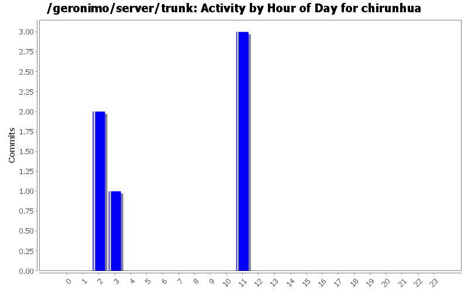
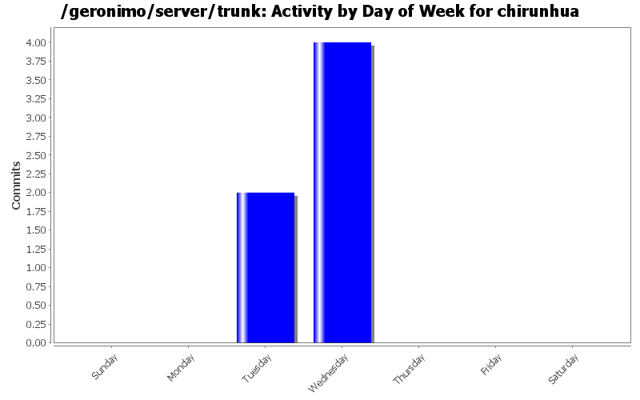
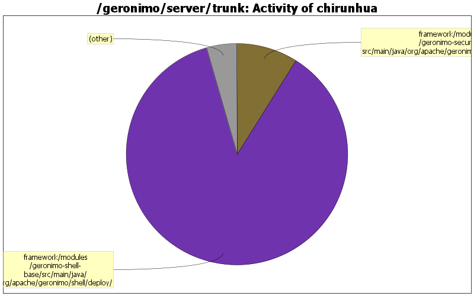

| Directory | Changes | Lines of Code | Lines per Change |
|---|---|---|---|
| Totals | 6 (100.0%) | 179 (100.0%) | 29.8 |
| framework/modules/geronimo-shell-base/src/main/java/org/apache/geronimo/shell/deploy/ | 2 (33.3%) | 155 (86.6%) | 77.5 |
| framework/modules/geronimo-security/src/main/java/org/apache/geronimo/security/keystore/ | 1 (16.7%) | 16 (8.9%) | 16.0 |
| framework/modules/geronimo-shell-base/src/main/resources/OSGI-INF/blueprint/ | 1 (16.7%) | 8 (4.5%) | 8.0 |
| plugins/tomcat/geronimo-tomcat7-builder/src/main/xsd/ | 2 (33.3%) | 0 (0.0%) | 0.0 |

GERONIMO-6011:support context level configurations for tomcat when using <container-config> in the deployment plan
0 lines of code changed in 2 files:
support bundle installation and uninstallation from Karaf Shell
163 lines of code changed in 3 files:
GERONIMO-6010:NPE when creating keystores
16 lines of code changed in 1 file: